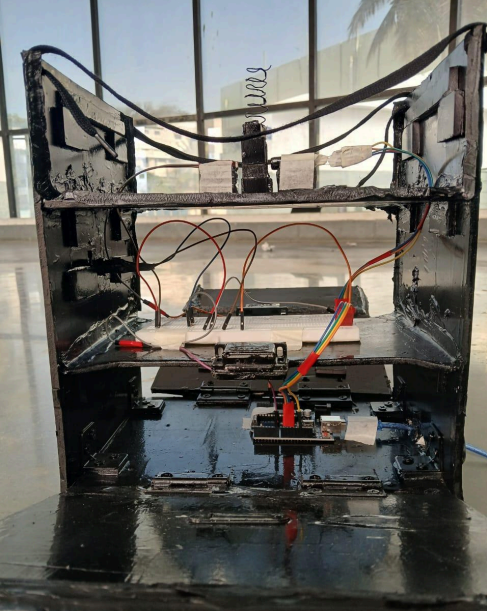
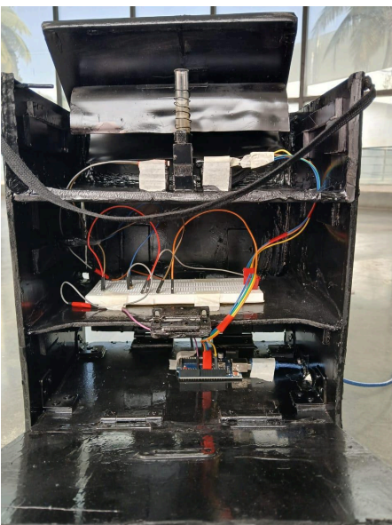
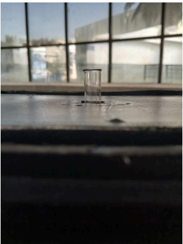
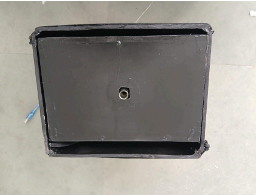

Temperature
25.3°C
Humidity
62.1%
Ammonia
2.8ppm
Status
Safe
Confidence
98%
Est. Shelf Life
44h
Gas Model Metrics
4.0h
LSTM Mean Absolute Error
Upload or Capture Image
Vision Analysis
AI Deduction
Analysis complete.
Training Sources
Datasets and model branches
MLP Gas Classifier
UCI Gas Sensor Array Drift Dataset
Used to train the MLP branch for ammonia/gas classification. The dataset contains long-running chemical sensor array readings, which helps the model learn gas signatures and sensor drift patterns before applying the same decision logic to the MQ135-based FoodSense pipeline.
open_in_new Dataset linkLSTM Shelf-Life Regressor
FoodSense time-series logs
Used for the temporal branch that estimates remaining shelf life. The LSTM reads recent temperature, humidity, and ammonia trends, applies temporal attention, and predicts a continuous hour estimate instead of only a fresh/spoiled label.
Vision Model 1
Food Spoilage Detection CNN
Classifies uploaded produce images as fresh or spoiled. This branch provides the direct visual spoilage signal used by the Image Analysis tab and complements the sensor stream when gas data is not available.
Training source: the paired Hugging Face dataset contains fresh/spoiled food images for binary CNN training. Images are resized to 224x224 RGB, normalized, and learned with a sigmoid output for P(spoiled).
Vision Model 2
ViT Fruit and Vegetable Quality Predictor
Predicts produce type and visual quality score from images. FoodSense uses this branch to add quality context to the spoilage result, producing a clearer recommendation and shelf-life estimate.
Training source: the exact source dataset is not disclosed in the model card. The model is consistent with multi-produce fresh/rotten datasets that train a ViT on 224x224 crops using product labels plus a freshness/quality target.
Novelty Matrix
FoodSense against existing use cases
| System / use case | Primary input | Typical output | Limitation | FoodSense novelty | Sensor-processing advance |
|---|---|---|---|---|---|
| Manual inspection | Human smell, color, texture | Subjective fresh/spoiled decision | Late detection and inconsistent judgment | Adds sensor evidence, AI confidence, and repeatable shelf-life estimation. | Converts raw ADC readings into compensated resistance/ppm trends before inference, reducing judgment from one-off smell/color checks. |
| Electronic nose systems | Multi-sensor gas arrays | Gas class or odor pattern | Higher cost, calibration complexity, bulky deployments | Uses low-cost MQ135 + DHT11 compensation while retaining ML-based gas reasoning. | Applies temperature-humidity correction and baseline-normalized Rs/R0 drift features so a single cheap sensor behaves more like a calibrated spoilage probe. |
| Vision-only freshness apps | Phone or webcam image | Freshness class or quality score | Misses invisible gas changes before visual spoilage appears | Combines visual spoilage/quality with gas and environment trends. | Uses gas velocity and persistence to flag invisible VOC changes before mold or color changes become visible. |
| Cold-chain temperature loggers | Temperature history | Threshold alert or excursion log | No direct spoilage marker and limited food-specific storage status | Adds humidity, ammonia, and learned shelf-life regression. | Fuses microclimate exposure with ammonia rise-rate, separating storage abuse from actual biochemical spoilage signals. |
| DIY Spectrophotometers | Color sensor / LDR output | Basic light transmission curve | Lack of direct chemical mapping or target concentration inference | Incorporates AI-driven spectral calibration and pigment-specific classification. | Maps RGB emission profiles to continuous spectral wavelengths ($R^2 = 0.9868$) and evaluates absorption at key chlorophyll and browning bands. |
| FoodSense Multimodal Pipeline | Compensated Gas/Climate Node + DIY Spectrophotometer + Visual Images | Ammonia status, continuous shelf-life (h), pigment degradation, visual freshness | Requires container calibration step per food category | Unifies atmospheric VOC trends, optical chemical changes, and visual surface evidence. | Applies on-device signal compensation, virtual spectrometer MLPs, pigment classification, and attention-augmented LSTM regression. |
AI Virtual Spectrometer
Sensor Emulation
Adjust the sliders below to simulate raw hardware outputs from the RGB LED emission and photodetector (LDR). The emulated MLP model will predict the wavelength and sample absorbance in real time.
Emulated Calibration Outputs
Predicted Wavelength
412 nm
Predicted Absorbance
-0.32 Abs
Calibration Model Evaluation
Pigment Degradation Classifier
Produce Condition Scanner
Simulate sample absorbance at key chlorophyll and browning absorption wavelengths to determine the ripeness and freshness state of the produce.
Classification Result
Predicted Spoilage Stage
High chlorophyll content and minimal browning pigments detected. Food is safe for storage.
Absorption Spectrum Peak Chart
Chassis and Assembly
Physical Hardware Systems
DIY Visible Spectrophotometer
Lightproof optical chamber using an Arduino-controlled RGB LED multi-wavelength emitter and an LDR detector.

Front View of Open Chamber

Mounting & Breadboard Connections

Sample Cuvette Insertion Slot

Top View of Closed Spectrometer Box
MQ135 Gas
DHT11 Temp/Hum
RGB LED Source
LDR Detector
Arduino Uno
Optical Chamber
Serial CSV Stream
Absorbance Curve
MLP Gas Class
LSTM Regressor
Calibration MLP
Pigment Class
Multimodal UI